Yttersta Tvärgränd 2
Huset uppfördes mellan 1755 och 1758. Byggherre var murgesällen Mårten Hammarklo. Det om- och påbyggdes
1793. Byggherre var kaptenen Ebbe Baum. År 1863 byggs våningen 1 tr upp om till en stor lägenhet, och en butik i
bottenvåningen blir bostad. Fastigheten ägdes då av grosshandlaren Carl Daevel. På gården finns en längre uthuslänga
i trä samt ett lusthus.
Av mantalslängden 1897 framgår att fastigheten då ägdes av förrådsvaktmästaren vid Bergsund Wilhelm
Lindblad. Bland hans hyresgäster fanns slakteriidkaren August Wilhelm Herman Lundell som uppges idka
»slakterirörelse härstädes under firma Lundell & Svanfeldt, försäljningsbod vid Kåkbrinken 22«.
Yttersta Tvärgränd 4
Huset uppfördes 1985. Tomten uppläts 1731 och bebyggdes strax därefter med en stuga som var i alltför dåligt skick för
att kunna bevaras när upprustning blev aktuell på 1980-talet.
Under 1700-talet beboddes tvärgrändsområdet av gesäller och småfolk, som där kunde bygga sig små kåkar. Så fick en av
dem, tröjvävargesällen Mattias Copheng, 1731 »intaga och hägna ett bergaktigt tomtstycke« nr 4 på västra sidan av gränden.
Här byggde han ett lågt timrat hus åt sig och sin familj. År 1760 anger mantalslängden att 18 personer bodde på fas
tigheten, bl. a. en slottslykttändaränka som försörjde sig som hampspinnerska.
I början av 1800-talet ägdes fastigheten av polisövergevaldigern Martin Titz, som upplät huset till sin hushållerska. Sedan
staden 1882 övertagit fastigheten hyrdes den ut, bl.a. till en järnarbetare vid Bergsunds verkstäder. Han betalade 1887 en
årshyra om 200 kronor.
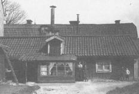
 Yttersta Tvärgränd 4, gårdssidan från V Yttersta Tvärgränd 4, gårdssidan från V
Yttersta Tvärgränd 6
Gathuset uppfördes som arbetarbostäder 1877. Gårdshuset byggdes 1880. Gathuset är ett av få typiska arbetarbostadshus
med bevarat korridorsystem.
Yttersta Tvärgränd 8
Huset är numera nybyggt, uppfört 1981 som barndaghem. Fastigheten ägs av Stockholms stad.
Yttersta Tvärgränd 10
Gathuset byggdes 1851. Bostadshuset på gården byggdes till största delen 1802, men en mindre del fanns redan 1791. År 1849
tillkom en kort tillbyggnad åt väster.
I Stockholms stad brandförsäkringskontors styrelse pågick under åren från 1814 och framåt en diskussion om att använda
kontorets överskottsmedel till byggande av »stenhus för arbetarklassen«. Resultatet blev att 20 000 riksdaler avsattes till en
»Fattigbyggnadsfond«. Fonden skulle ge lån till personer som ämnade uppföra stenhus åt stadens fattiga. Hyran skulle
fastställas av stadens fattigvårdsstyrelse och husen skulle vara relativt små - högst 16 lägenheter bestående av enkelrum
med spis och kakelugn eller ett rum och kök.
|
Yttersta Tvärgränd 7 och 10, byggda 1851 och 1852, tillhör de första husen som uppfördes med fondens medel.
Gathuset Yttersta Tvärgränd 10 innehåller idag 15 bostäder - övervägande smålägenheter om ett och två rum och kök.
Slumstationen i Katarina, den första i vårt land, fick 1897 en avläggare i Maria församling, belägen i Yttersta Tvärgränd 10,
mitt i Skinnarvikens fattigkvarter. Under en följd av år låg stationen sedan i Brännkyrkagatan 96 för att 1924 flytta till
Rosenlundsgatan 28.
|
|
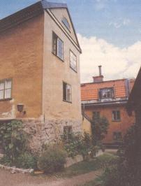
Yttersta Tvärgränd 10, gårdssidan från väster
|
Yttersta Tvärgränd 3
Tomten uppläts 1752. Byggnadens södra del av trä, nu reveterad, återuppbyggdes efter en eldsvåda 1765. Den norra delen
av sten är troligen uppförd under 1780-talet.
Yttersta Tvärgränd 5
Tomten uppläts 1753 till murargesällen Jan Tunberg. År 1755 omnämns hans stuga i mantalslängden. Den skattar för två
fönsterlufter. År 1770 övergick gården i soldaten vid Karlskrona marinregemente Lars Högbergs ägo. År 1799 ägs
fastigheten av spannmålshandlaren Carl Öberg. År 1834 är det skomakargesällen Carl Norberg som står som ägare.
Gården byter därefter ofta ägare till dess staden förvärvar fastigehten 1919.
I brandförsäkringshandling från 1840 beskrivs gården som »en våning hög timmerbyggnad, delvis ifylld med tegel, delvis
in- och utvändigt panelad...». Idag är husets fasader reveterade och putsade. Det har överhängande brutet takfall med tvåkupigt tegel.
Yttersta Tvärgränd 7
Det stora bostadshuset i sten uppfördes som arbetarbostäder 1852 i likhet med Yttersta Tvärgränd nr 10.
Det här huset skiljer sig från många andra reservatshus i så måtto att det 1970 bebos av ungefär samma yrkeskategorier som
1880. Husets karaktär av arbetarbostäder har alltså behållits genom åren.
År 1880 är huset befolkat av 39 vuxna och 38 barn, inalles 77 personer. Här finns fiskhandlare, f. d. kommissionshandlare,
linnestrykerskor, arbetskarlar, tvätterskor, sockerbruksarbetare, en plåtslagarlärling, en skomakargesäll, en snickargesäll, en
järnarbetaränka, en arbetskarlsänka, en kopparslagarlärling, en dräng, en filare, en bagargesällänka m. fl.
Yttersta Tvärgränd 9
Gathuset uppfördes 1769. År 1852 ombyggdes och moderniserades byggnaden varvid även gårdshuset av sten uppfördes.
I detta hus höll en mamsell Rosendahl privatskola på 1870-talet. Undervisningen bedrev mamsellen i sin våning, där ett
större rum användes som skolsal, gemensam för såväl nybörjare som mera försigkomna.
|
|
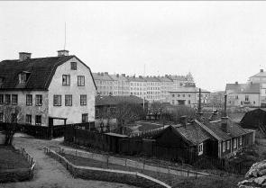
Närmast Yttersta Tvärgränd 2, där bakom Skinnarviksparken.
I bakgrunden nya villor vid Skinnarviksringen och hyreshus vid
Lundagatan. Huset till vänster är Yttersta Tvärgränd 4.
Bilden tagen från NO år 1919.
 Nutid 2002 Nutid 2002
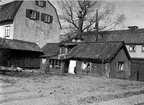
Yttersta Tvärgränd 4, gårdssidan från SV
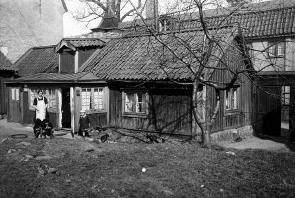
Yttersta Tvärgränd 4, gårdssidan från SV
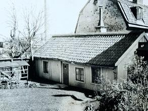
Yttersta Tvärgränd 8 år 1923. Bilden från NV
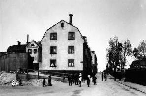
Yttersta Tvärgränd 10 från söder i hörnet vid Lundagatan västerut.
Här skulle Ringvägen gått fram norrut, men projektet förverkligades aldrig.
Nutid 2002
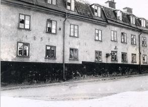
Yttersta Tvärgränd 10 från SO
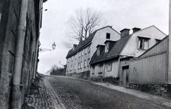
Yttersta Tvärgränd 3-5 år 1920 från SV. Närmast till höger nr 5.
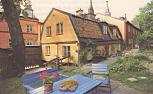
Nutid 2002
Yttersta Tvärgränd 5 från SO. På andra sidan gatan nr 6.
År 1910 har 22 vuxna och 21 barn sin bostad här. De yrken som förekommer är skomakare, typograf, timmerman,
åkeriarbetare, gasverksarbetare, sockerbruksarbetare, cigarrettarbeterska, skrädderiarbetarhustru, korkarbeterska m. fl.
År 1940 har invånarantalet ökat till 30 vuxna men bara 3 barn. Yrkena är bl. a. grovarbetare, maskinbiträde,
motorskötare, smideshantlangare, utkörare, elektriker, chaufför, droskförare, kartongarbeterska, kokerska, diskare och
städerska.
År 1970 finns här 15 vuxna, barn redovisas inte. Yrkessammansättningen är relativt oförändrad: lagerarbetare,
köksbiträde, trädgårdsarbetare, målare, filare, tjänsteman, hamnarbetare, diversearbetare m. fl.
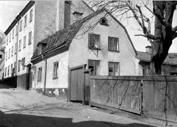
Yttersta Tvärgränd 9 från SV
|


{kind=link}